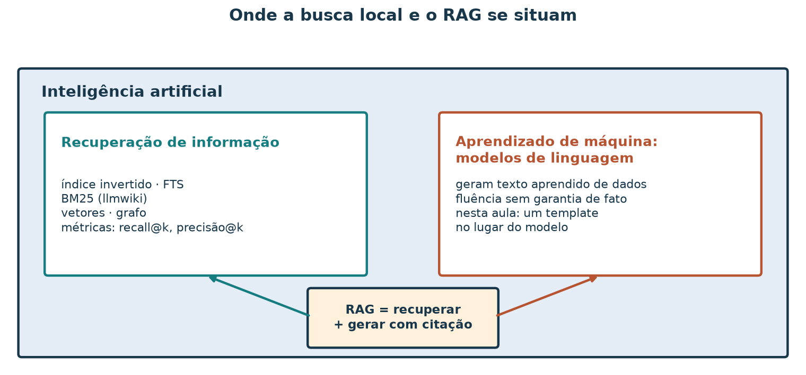
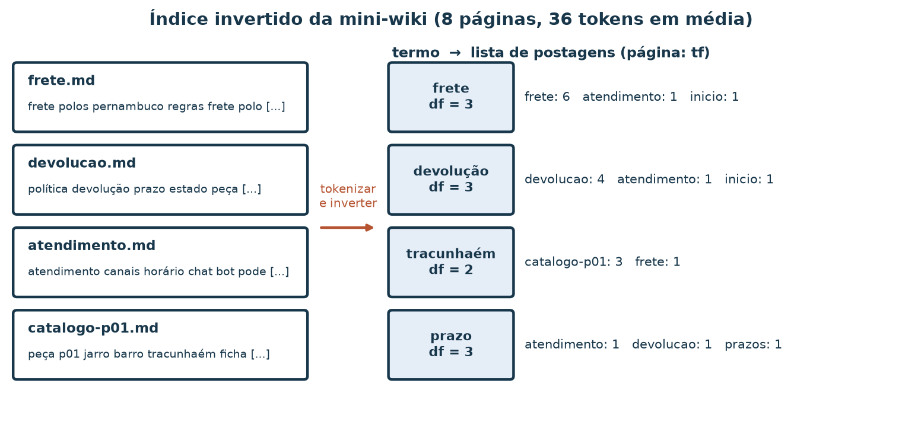
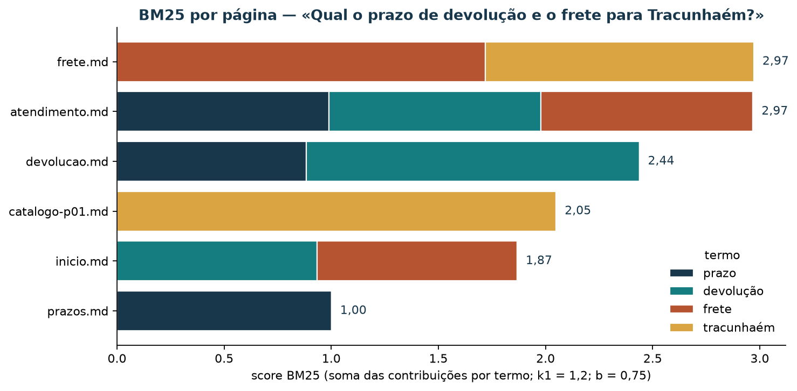
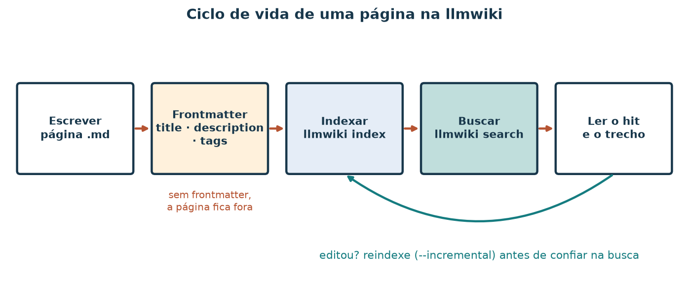

Busca local em Markdown: índice invertido, BM25 e llmwiki
Leia a versão web com o explorador interativo incorporado.
A loja de artesanato guarda suas políticas em páginas Markdown: frete, devolução, prazos de produção, horário do atendimento. Quando um cliente pergunta “qual o prazo de devolução?”, alguém da equipe abre arquivo por arquivo até achar a frase certa. Com oito páginas isso ainda funciona; com oitenta, a resposta atrasa e às vezes sai errada. O que a equipe precisa é de uma busca que devolva, em ordem, as páginas que mais provavelmente contêm a resposta, e que mostre por que cada uma ficou naquela posição.
Ao concluir este tutorial, você deverá conseguir construir à mão um
índice invertido pequeno, calcular a pontuação
BM25 de um termo numa página, indexar uma pasta de
Markdown com o binário llmwiki e ler um ranking explicando
de onde vem cada posição. Você também verá, com números, como um erro de
digitação muda o resultado e por que uma página “de entrada” pode vencer
a página que de fato responde.
O corpus é sintético: oito páginas curtas em mini-wiki-rag/.
Os scores servem para aprender o método; eles não descrevem o desempenho
de uma busca num acervo real.
Roteiro de estudo
| Tempo sugerido | Atividade de estudo |
|---|---|
| 8 min | Situar busca por palavra-chave na IA e na recuperação de informação |
| 7 min | Ler o corpus e o contrato de frontmatter |
| 10 min | Montar um índice invertido à mão |
| 15 min | Calcular TF, DF, IDF e um score BM25 completo |
| 10 min | Indexar com a llmwiki e confirmar o que fica fora do Git |
| 10 min | Rodar três consultas e explicar o ranking |
| 10 min | Fazer o experimento do erro de digitação |
| 10 min | Explorar o ranking no painel e exportar uma evidência |
| 10 min | Resolver o exercício |
1. Onde a busca por palavra-chave se situa
Inteligência artificial (IA) é o campo que estuda sistemas capazes de tarefas como perceber, raciocinar, aprender e apoiar decisões. Recuperação de informação é a área que estuda como encontrar, numa coleção de documentos, aqueles que atendem a uma necessidade expressa numa consulta. Ela é mais antiga que os modelos de linguagem atuais e continua sendo a base de buscadores, catálogos e assistentes que respondem a partir de documentos.

Figura 1 — Mapa conceitual, não proporcional. Este tutorial fica na caixa da esquerda: o BM25 é uma fórmula estatística fixa, sem parâmetros aprendidos de exemplos. A busca semântica e a híbrida da llmwiki usam vetores produzidos por um modelo treinado, e por isso já tocam a caixa da direita.
O BM25 conta palavras e pondera raridade e tamanho de documento. Ele não aprende com exemplos rotulados; você escolhe dois números, e , e a fórmula faz o resto. Essa transparência é a razão de começar por ele: cada ponto do score pode ser refeito com lápis e papel.
2. O corpus e seu contrato
Cada página da mini-wiki começa com um frontmatter YAML com três campos:
---
title: Política de devolução
description: Prazo, estado da peça e como abrir o pedido de devolução.
tags: [devolucao, politica, pt-br]
---A llmwiki só admite no índice arquivos que tragam esse cabeçalho. O
README.md da pasta não tem frontmatter e fica de fora; a
própria ferramenta avisa na indexação:
Warning: skipping README.md — No frontmatter found| Página | title |
Assunto que responde |
|---|---|---|
inicio.md |
Início — loja de artesanato PE | Apresenta o corpus e cita todos os temas |
frete.md |
Frete — polos de Pernambuco | Frete por CEP; frete grátis acima de R$ 200 no Pilar; prazos de entrega |
devolucao.md |
Política de devolução | 7 dias corridos após o recebimento, peça sem uso |
prazos.md |
Prazos de produção artesanal | 1–2 dias úteis de prateleira; até 15 dias úteis para encomenda de cerâmica |
atendimento.md |
Atendimento e canais | Chat das 9h às 18h, dias úteis; o que sobe para humano |
recomendador.md |
Como o recomendador sugere peças | Popularidade, co-ocorrência, score e
reason |
catalogo-p01.md |
Peça p01 — Jarro barro Tracunhaém | Ficha da peça de cerâmica |
catalogo-p04.md |
Peça p04 — Rendeira Alto do Moura | Ficha da peça de renda |
Repare em inicio.md e atendimento.md: são
páginas que mencionam frete, devolução e prazo sem dar
os números. Elas vão reaparecer na seção 6.
find material/mini-wiki-rag -name '*.md' | sortResultado esperado: nove arquivos, dos quais oito têm frontmatter.
3. O índice invertido
Um livro técnico traz no fim um índice remissivo: “frete, p. 12, 47, 90”. O índice invertido é a mesma ideia: para cada termo, a lista das páginas onde ele aparece, com a contagem. Essa lista se chama lista de postagens. Em vez de ler todas as páginas a cada pergunta, a busca consulta só as listas dos termos da consulta.
Para montar o índice, cada página passa por uma
tokenização. Nas contas deste tutorial, feitas por scripts/avaliar_rag.py,
as regras são:
- O texto pesquisável junta
title,descriptione o corpo da página. - Tudo vai para minúsculas; acentos são preservados
(
devolução≠devolucao). - Um token é uma sequência de letras e dígitos; pontuação separa tokens.
- Palavras muito frequentes do português (stopwords, como “de”, “o”, “para”) e tokens de uma letra são descartados.
- Não há redução de plural nem de conjugação:
encomendaeencomendassão termos diferentes.

Figura 2 — Índice invertido parcial da mini-wiki. O número após
cada página é a contagem do termo nela (tf). O df é o
número de páginas da lista. Os valores vêm das oito páginas com as
regras acima.
Minúcia. O termo frete aparece seis
vezes no texto pesquisável de frete.md: uma no
title (“Frete — polos…”), duas na description
(“Regras de frete… frete grátis…”) e três no corpo (o título
# Frete, “frete calculado” e “frete grátis”). Ele aparece
uma vez em atendimento.md e uma em inicio.md.
Por isso a lista de postagens de frete tem três
páginas.
4. Pontuar: TF, DF, IDF e BM25
Saber onde um termo aparece não basta; a busca precisa ordenar as páginas. Três perguntas orientam a pontuação.
Frequência do termo: quantas vezes o termo aparece na página?
é a contagem do termo no documento . Mais ocorrências sugerem que a página trata do assunto, mas a vigésima ocorrência acrescenta menos informação que a segunda.
Frequência nos documentos: em quantas páginas o termo aparece?
é o número de documentos com . Um termo presente em quase todas as páginas ajuda pouco a distinguir uma da outra.
Raridade: quanto vale encontrar o termo?
A frequência inversa nos documentos usada pelo BM25, com documentos, é
| df na mini-wiki () | idf | Leitura |
|---|---|---|
| 1 | 1,7918 | Termo exclusivo de uma página: vale muito |
| 2 | 1,2809 | Termo raro |
| 3 | 0,9445 | Termo comum a três páginas |
| 4 | 0,6931 | Termo presente em metade do corpus |
BM25: frequência saturada, raridade e tamanho
O BM25 (Best Matching 25) soma, para cada termo da consulta , uma contribuição que combina as três ideias:
- é o número de tokens do documento e a média do corpus (36 tokens na mini-wiki).
- controla a saturação: com , a fração com nunca passa de , por mais que o termo se repita.
- controla a normalização por tamanho: com , uma página mais longa que a média precisa de mais ocorrências para obter o mesmo peso.
Os valores e são usuais na literatura e são os deste tutorial.
Conta completa:
frete em frete.md
| Grandeza | Valor | De onde vem |
|---|---|---|
| 8 | páginas com frontmatter | |
| 6 | seção 3 | |
| 3 | frete, atendimento, inicio | |
| fórmula | ||
| contagem de tokens | ||
| denominador | ||
| contribuição |
Para a consulta frete Tracunhaém, some a contribuição de
tracunhaém em frete.md
(,
,
):
.
O total é
.
Confira com o script, que usa só a biblioteca padrão do Python:
uv run python scripts/avaliar_rag.py --explicar frete --pagina frete.mdResultado esperado (trecho): "tf": 6,
"df": 3, "idf": 0.9445,
"comprimento": 38, "contribuicao": 1.7196.
Decimais no JSON usam ponto.
5. Indexar com a llmwiki
A llmwiki é um binário escrito em Rust que lê uma
pasta de Markdown com frontmatter, grava um índice em
.index/ e responde a buscas por palavra-chave (BM25),
semânticas (vetores) ou híbridas. Tudo fica no disco local; não há
servidor.
Caminho A — com Rust instalado
cargo install llmwiki # uma vez; exige o Rust via rustup
llmwiki --versionEste tutorial foi conferido com llmwiki 0.2.1. Se o
binário já estiver em ~/.cargo/bin, confira apenas se essa
pasta está no PATH.
Na raiz do repositório:
llmwiki init --wiki-root material/mini-wiki-rag
llmwiki index --wiki-root material/mini-wiki-rag
llmwiki list --wiki-root material/mini-wiki-ragA indexação avisa sobre o README.md sem frontmatter e
termina com uma linha como Indexed 9 files (… 1 skipped …).
O list mostra as oito páginas, cada uma com sua
description e suas tags. Dentro de
.index/ você encontra o índice de palavras
(tantivy/), o índice de vetores
(vectors.usearch) e os metadados dos arquivos.
O índice é um artefato reconstruível e não deve ir para o Git. Confirme:
git check-ignore -v material/mini-wiki-rag/.indexResultado esperado:
material/mini-wiki-rag/.gitignore:1:.index/ seguido do
caminho. O .gitignore da raiz também lista essa pasta.
Caminho B — sem Rust
Se não for possível instalar o Rust, você reproduz o BM25 com o script da seção 4, que lê as mesmas páginas, e acompanha o ranking no explorador da seção 9. Para uma busca textual com SQLite, também sem instalar nada:
uv run python scripts/demo_rag_fts.py --indexar
uv run python scripts/demo_rag_fts.py "frete Tracunhaém"6. Três consultas e a leitura do ranking
llmwiki search --wiki-root material/mini-wiki-rag --keyword "frete Tracunhaém"
llmwiki search --wiki-root material/mini-wiki-rag --keyword "devolução frete Tracunhaém"
llmwiki search --wiki-root material/mini-wiki-rag --keyword "Qual o prazo de devolução e o frete para Tracunhaém?"Resultados com llmwiki 0.2.1 (três primeiras
posições):
| Consulta | 1º | 2º | 3º |
|---|---|---|---|
frete Tracunhaém |
frete.md 6,87 |
catalogo-p01.md 3,58 |
atendimento.md 0,98 |
devolução frete Tracunhaém |
frete.md 6,87 |
devolucao.md 4,94 |
catalogo-p01.md 3,58 |
| pergunta completa | devolucao.md 13,90 |
atendimento.md 11,93 |
frete.md 10,17 |
Cada hit vem com a linha onde o termo casou
(→ match at: L2 "frete" · …). Os scores da llmwiki diferem
dos calculados na seção 4 porque a ferramenta usa sua própria
tokenização e seus próprios pesos. Compare posições, não
valores. Para frete Tracunhaém, o script da
biblioteca padrão produz a mesma ordem: frete.md 2,97,
catalogo-p01.md 2,05, atendimento.md 0,99,
inicio.md 0,93.
Por que uma página que só menciona o assunto pode vencer
Na pergunta completa, o BM25 da seção 4 coloca
atendimento.md empatada com frete.md e à
frente de devolucao.md, a página que tem o prazo.

Figura 3 — Cada cor é a contribuição de um termo.
atendimento.md soma três contribuições pequenas porque cita
três assuntos numa página curta; devolucao.md soma duas
maiores. O BM25 recompensa cobrir vários termos da consulta, e isso não
equivale a responder.
O efeito fica mais forte na consulta curta
devolução frete Tracunhaém: o BM25 da seção 4 põe
devolucao.md em quinto, com 1,55, atrás de
atendimento.md (1,98) e inicio.md (1,87). A
llmwiki a põe em segundo. Duas buscas razoáveis, duas ordens diferentes:
o ranking depende de tokenização, campos e pesos, e por isso precisa ser
avaliado com perguntas de verdade, como no tutorial de RAG.
7. O experimento do erro de digitação
Um índice só conhece os tokens que viu. Para sentir isso, troque temporariamente uma letra:
- Em
material/mini-wiki-rag/frete.md, troqueTracunhaém e AltoporTracunhaen e Alto. - Reindexe só o que mudou:
llmwiki index --wiki-root material/mini-wiki-rag --incremental(saída:… 1 updated, 8 skipped …). - Repita
llmwiki search … --keyword "frete Tracunhaém"e anote. - Busque o erro:
llmwiki search … --keyword "Tracunhaen". - Restaure o texto original, reindexe e confira com
git diff material/mini-wiki-rag/frete.md, que deve sair vazio.
| Situação | frete.md |
catalogo-p01.md |
|---|---|---|
| Original | 6,87 | 3,58 |
| Com o erro | 5,64 | 4,33 |
Busca por Tracunhaen |
1,72 (único hit) | — |
Duas coisas mudaram. frete.md perdeu a contribuição de
tracunhaém e caiu. catalogo-p01.md
subiu sem ter sido editada: com o erro,
tracunhaém passou de duas páginas para uma, e o idf desse
termo foi de
()
para
().
Uma edição numa página altera o score de outra, porque o idf é uma
propriedade do corpus inteiro.

Figura 4 — O índice é uma fotografia do corpus. Até você reindexar, a busca responde sobre a versão antiga das páginas.
8. Palavra-chave, semântica e híbrida
Sem --keyword, a llmwiki faz busca
híbrida: combina a lista do BM25 com uma lista por
similaridade de vetores (embeddings). Com
--semantic, usa só os vetores.
| Modo | devolução frete Tracunhaém, três primeiros |
Escala dos scores |
|---|---|---|
--keyword |
frete, devolucao, catalogo-p01 | 1,92 a 6,87 |
--semantic |
devolucao, catalogo-p01, frete | 0,35 a 0,53 |
| híbrido (padrão) | devolucao, frete, catalogo-p01 | cerca de 0,03 |
A busca semântica pode aproximar “troca” de “devolução” sem palavra
em comum; a busca por palavra-chave explica cada ponto do score. Nesta
mini-wiki as duas acham as mesmas páginas, em ordens diferentes. As
escalas não se comparam entre modos. Use --keyword quando
precisar de resultados reproduzíveis e auditáveis, como nas tabelas
deste tutorial.
9. Explorar o ranking no painel
O explorador de busca e RAG recalcula o BM25 no navegador com as mesmas regras da seção 3, mostra a contribuição de cada termo por página e compara com os rankings já calculados do FTS5 e da llmwiki. Você pode usá-lo incorporado à versão web deste tutorial ou abrir o HTML numa cópia local do repositório. Consulte o roteiro de exploração.
Experimente a busca neste tutorial
Digite uma consulta e veja a pontuação BM25 termo a termo. O corpus é a mini-wiki sintética da loja.
O painel não reindexa a pasta: ele traz o texto das oito páginas
embutido. Se você editar a mini-wiki, regenere os dados com
uv run python scripts/gerar_bi_rag.py.
Atividade no painel
- Escolha BM25 ao vivo e digite
frete Tracunhaém. Na tabela de termos, localize a linhafrete.md · fretee confira os valores da seção 4. - Escolha a pergunta pronta x1
(
devolução frete Tracunhaém). Em que posição ficadevolucao.md? Quais termos sustentamatendimento.md? - Troque para llmwiki e compare a posição de
devolucao.md. - Digite
encomenda cerâmicae depoisencomendas cerâmica. Explique a diferença pela regra 5 da seção 3. - Exporte o PNG do ranking e escreva duas frases sobre o que ele mostra.
10. Limitações
- Oito páginas curtas mostram o mecanismo, mas não a escala: em milhares de documentos, o idf se estabiliza e páginas “de entrada” pesam menos.
- A tokenização deste tutorial não junta plural e singular nem corrige acentos; ferramentas reais costumam ter estratégias para isso, com custos próprios.
- O score ordena páginas; ele não garante que a primeira contenha a resposta. Isso só se verifica com perguntas cujas respostas você conhece.
--keywordé determinística; os modos semântico e híbrido dependem do modelo de vetores embutido na versão da ferramenta.
11. Exercício
Use a mini-wiki e a consulta
Qual o horário do chat?.
- Liste os termos que sobram depois da tokenização.
- Monte a lista de postagens de cada termo (página e tf).
- Calcule à mão o BM25 de
atendimento.md( tokens). - Rode a consulta na llmwiki com
--keyworde registre o top-3. - Diga qual página responde à pergunta e se ela ficou em primeiro nos dois cálculos.
- Explique, em até três frases, o que aconteceria com o score de
atendimento.mdse uma nova páginahorarios.mdtambém citasse “horário”.
Resolução comentada
Termos: horário e chat
(“qual”, “o” e “do” são stopwords).
Postagens: horário →
atendimento.md (2); chat →
atendimento.md (2), prazos.md (1). Logo
e
.
Conta: a normalização de tamanho é
,
e o denominador com
é
.
horário:
.
chat:
.
Total:
.
prazos.md soma só chat e fica com 1,36.
llmwiki: atendimento.md 9,14;
catalogo-p04.md 2,81; recomendador.md 2,58. A
página certa fica em primeiro nos dois cálculos, mas os vizinhos mudam.
A llmwiki pontua também palavras como “o” e “do”, que o script descarta
como stopwords: a linha → match at: L2 "o" · … de
catalogo-p04.md mostra isso. Por esse motivo ela devolve
páginas sem horário nem chat.
Nova página: horário passaria a ter
,
o idf cairia de 1,7918 para 1,2809 e o score de
atendimento.md diminuiria, mesmo sem nenhuma edição nela. A
ordem entre as duas dependeria de tf e de tamanho.
Referências bibliográficas e roteiro de leitura
Consulta dos materiais on-line: 7 nov. 2026.
- MANNING, Christopher D.; RAGHAVAN, Prabhakar; SCHÜTZE, Hinrich. Introduction to Information Retrieval. Cambridge: Cambridge University Press, 2008. Texto integral on-line, em inglês. Para aprofundar: os capítulos 1 (índice invertido), 2 (tokenização) e 6 (tf-idf) acompanham as seções 3 e 4.
- ROBERTSON, Stephen; ZARAGOZA, Hugo. The probabilistic relevance framework: BM25 and beyond. Foundations and Trends in Information Retrieval, v. 3, n. 4, p. 333–389, 2009. DOI: 10.1561/1500000019. Para aprofundar: a origem do BM25, o papel de e e as variantes por campo.
- LLMWIKI. Repositório e documentação do binário
llmwiki(crate Rust). crates.io/crates/llmwiki. Para consultar: opções deinit,index,searche o formato do frontmatter na versão que você instalou. - SQLITE. SQLite FTS5 Extension. Documentação em inglês.
Para consultar: o caminho B da seção 5, tokenizadores e
a função
bm25().
| Artefato | Papel |
|---|---|
material/mini-wiki-rag/ |
Corpus de oito páginas com frontmatter |
scripts/avaliar_rag.py |
BM25 da biblioteca padrão; --explicar detalha um
termo |
scripts/demo_rag_fts.py |
Índice FTS5 em SQLite (caminho B) |
material/bi-rag/ |
Explorador de busca e RAG |
scripts/gerar_figuras_rag.py |
Figuras deste tutorial |